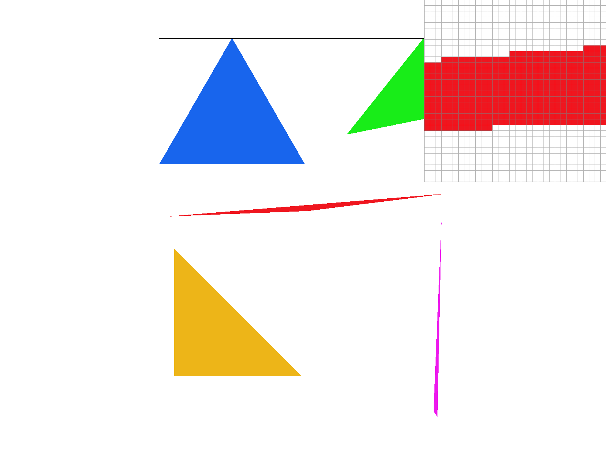
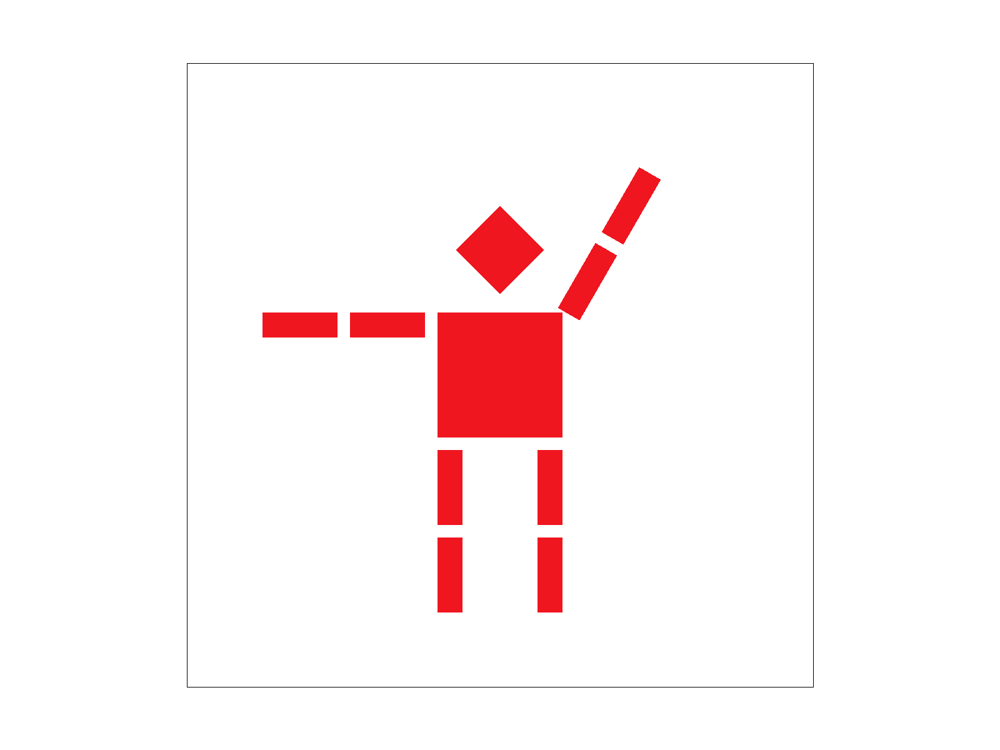
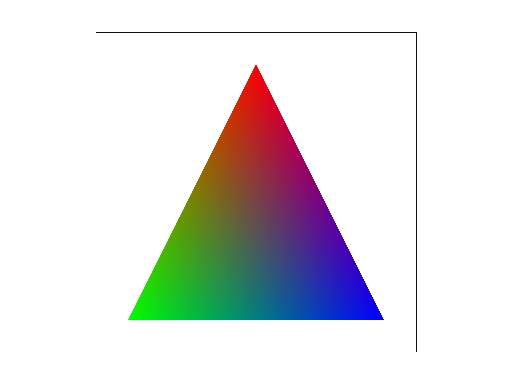
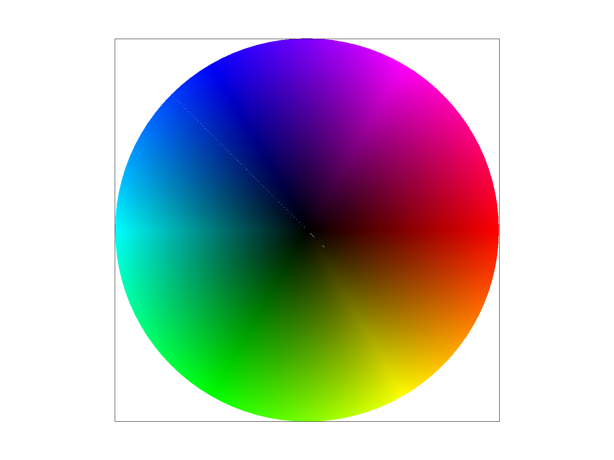
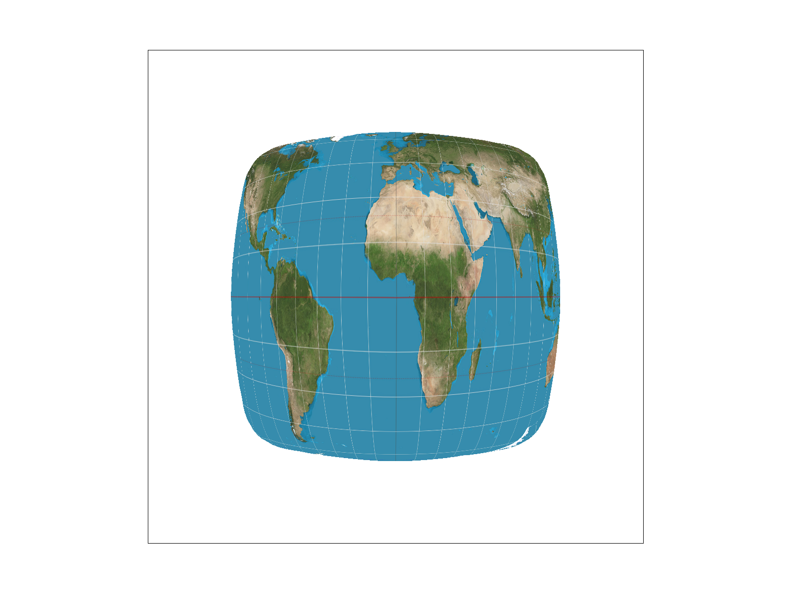
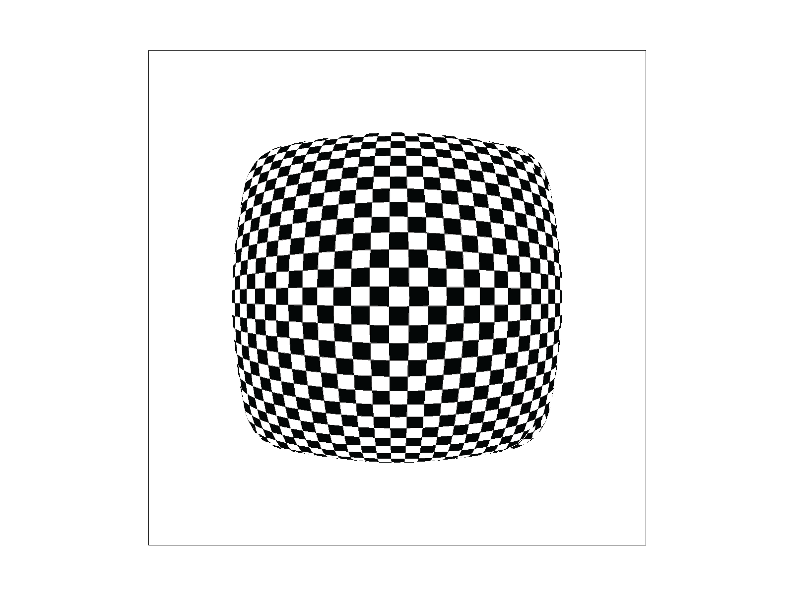
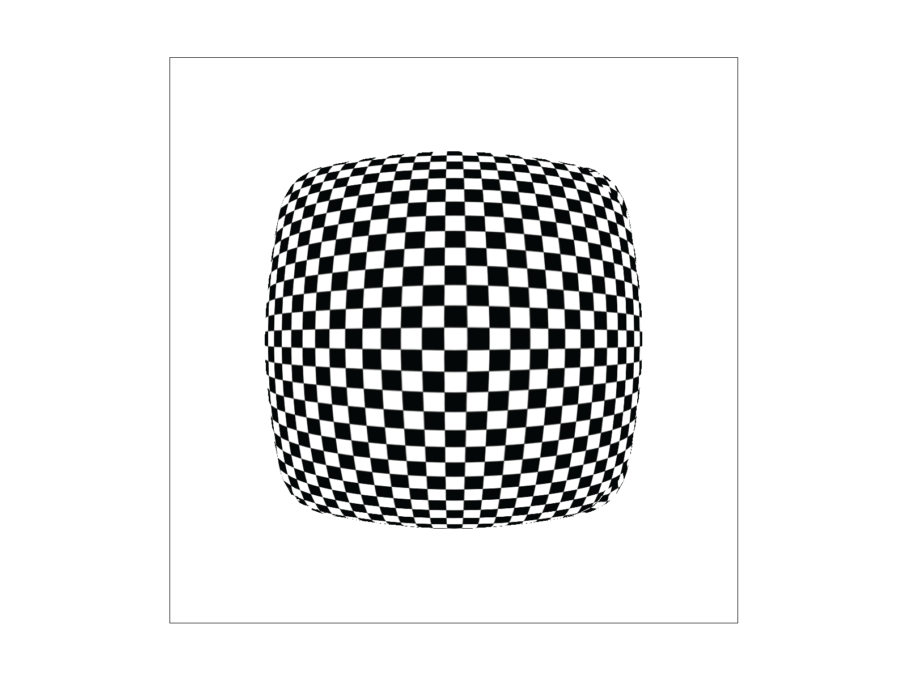
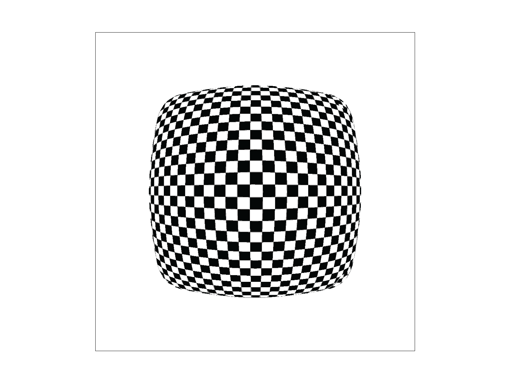
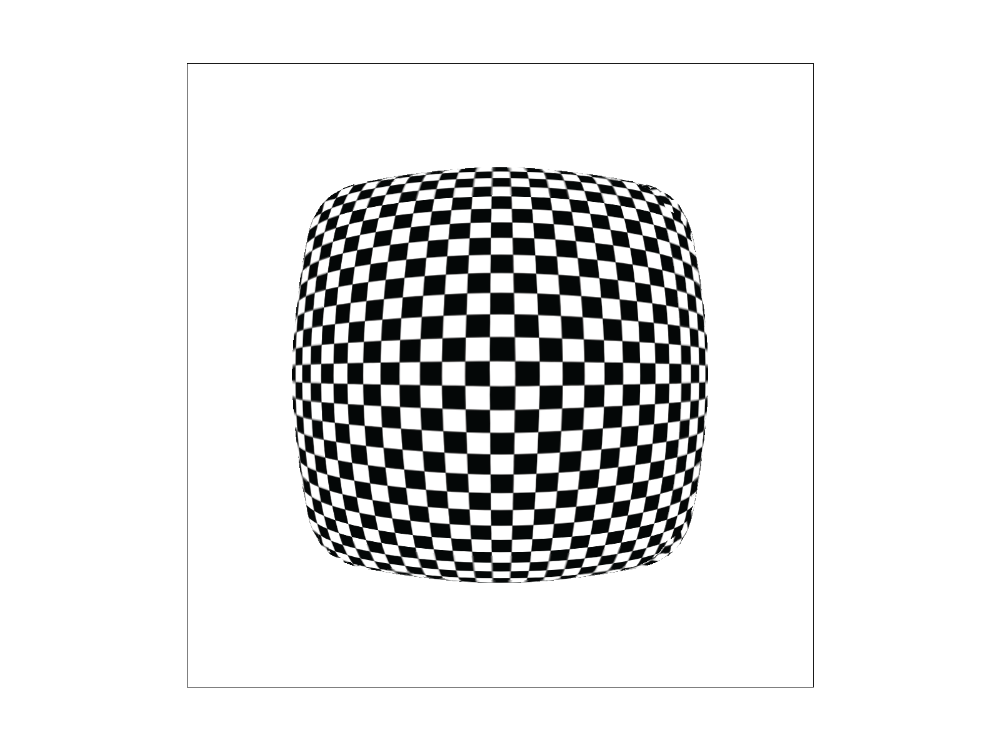

CS184/284A Fall 2026
Homework 1 Write-Up
Overview
In this homework, I built a triangle rasterizer and added supersampling, transforms, barycentric color interpolation, texture mapping, and mipmap level sampling. Starting with solid-color triangles helped me understand how sample positions determine which pixels get filled. Adding more samples and different texture filters showed me how much those choices affect the final image.
I also learned how hierarchical transforms make it easier to move connected shapes, and how barycentric coordinates can be used for both smooth color gradients and texture coordinates.
Task 1: Drawing Single-Color Triangles
To rasterize a triangle, I first find its bounding box using the minimum and maximum x and y values of its three vertices. I then loop through every pixel inside this bounding box and sample at the center of each pixel, (x + 0.5, y + 0.5).
For each sample point, I use the three edges of the triangle to check whether the point is inside. I calculate an edge function for each edge, which tells me which side of the edge the sample point is on. If all three results are nonnegative or all three are nonpositive, the point is inside the triangle or on its boundary, and I fill that pixel with the triangle's color. Checking both signs makes this work for vertices given in either clockwise or counterclockwise order.
My algorithm only checks pixels inside the triangle's bounding box, so I don't waste time checking pixels that are definitely too far away to be part of the triangle. If the bounding box has width W and height H, the algorithm checks at most W × H pixels. Each pixel needs only three edge tests, which take constant time, so the algorithm runs in O(W × H) time.

The zoomed-in view shows how pixels are either filled or left empty depending on whether the center of the pixel is inside the triangle.
Task 2: Antialiasing by Supersampling
For supersampling, I changed the sample buffer so it stores multiple samples for each pixel instead of only one. Its size is width × height × sample_rate. A sample rate of 4 gives each pixel a 2 × 2 grid of samples, while a sample rate of 16 gives it a 4 × 4 grid.
When rasterizing a triangle, I still loop through its bounding box. Instead of only testing the center of each pixel, I test the center of every supersample within it. I use the same three edge tests from Task 1. If a sample is inside, I store the triangle's color at that location in the sample buffer.
I also changed fill_pixel() so points and lines fill all the samples belonging to a pixel. I updated set_sample_rate() and set_framebuffer_target() so the buffer has enough space for all the supersamples. Finally, I changed resolve_to_framebuffer() to average each pixel's samples and use that average as the final pixel color.
Supersampling helps with antialiasing because it gives a better estimate of how much of a pixel a triangle covers. With one sample, a pixel is either completely filled or completely empty. With multiple samples, some can be inside while others are outside. Averaging them gives pixels near an edge intermediate colors, making diagonal edges and thin triangles look smoother.


At sample rate 1, skinny triangles and diagonal edges look jagged. Parts of very thin triangles can disappear because the triangle does not cover the center of a pixel.
At sample rate 4, testing four locations makes it more likely that a thin triangle or edge covers at least some samples. Partially covered pixels get an averaged color, making the edges smoother.
At sample rate 16, pixel coverage is estimated more accurately. The pixel inspector shows more partially colored pixels around the edges, and the skinny triangle is represented more smoothly.
Task 3: Transforms
I changed Cubeman so that he looks like he's waving with his right arm. I moved the arm's coordinate system to the shoulder and then rotated the whole arm from there, so both arm segments move together. This helped me see how hierarchical transforms make it easier to move connected parts without changing every shape individually.

Task 4: Barycentric coordinates
Barycentric coordinates describe a point inside a triangle using three weights, α, β, and γ, that add up to 1. Each weight represents how much influence one vertex has on that point. If the vertices are red, green, and blue, the color at a point inside the triangle is calculated as:
C = αC0 + βC1 + γC2, α + β + γ = 1
At a vertex, its barycentric coordinate is 1 and the other two are 0, so the color is exactly that vertex's color. As a point moves toward the center, multiple vertices contribute to its color, causing the colors to blend smoothly across the triangle.

Near each vertex, the color is mostly determined by that vertex. Between two vertices, their colors blend together, and near the center all three vertex colors contribute.

The color wheel is made from triangles whose vertex colors are interpolated using barycentric coordinates. Because the weights change continuously as the sample position moves across each triangle, the colors also change continuously, producing the smooth gradient shown here.
Task 5: "Pixel sampling" for texture mapping
Pixel sampling is basically how I figure out what color from the texture should show up at each point on the triangle. I used barycentric coordinates to interpolate the (u, v) texture coordinates, then used those coordinates to sample the texture.
For nearest sampling, I just pick the closest texel to the sampling location. It's simple and fast, but it can look pretty blocky. For bilinear sampling, I blend the four surrounding texels based on the sample's fractional position between them. This makes the texture look smoother.

This one looks the roughest. The thin grid lines and some coastlines look more jagged, with more abrupt changes in the texture.


Increasing to 16 samples per pixel makes the edges cleaner and reduces some jaggedness. The texture still has the sharper look of nearest sampling.


The difference between nearest and bilinear is easiest to notice around thin latitude/longitude lines, coastlines, and curved edges. Nearest sampling can jump suddenly between texels, while bilinear blends them together. Increasing the number of samples per pixel helps reduce aliasing, including jagged shape edges, while bilinear sampling smooths transitions within the texture.
Task 6: "Level Sampling" with mipmaps for texture mapping
Level sampling determines which mipmap level of a texture to use when sampling a pixel. A mipmap stores multiple versions of the same texture at different resolutions. Level 0 is the original full-resolution texture, and each following level is a lower-resolution version.
To choose a level, I calculate texture coordinates at the current sample point (x, y) and at the neighboring screen positions (x + 1, y) and (x, y + 1). I use barycentric coordinates to interpolate UV coordinates at all three positions. The differences tell me how quickly texture coordinates change as I move one pixel on the screen.
In get_level(), I convert these changes into texel coordinates using the original texture's width and height. I take the larger length of the changes in the two screen directions and use log2 to determine the appropriate mipmap level.
For L_ZERO, I always sample level 0. For L_NEAREST, I round the calculated level and sample the closest mipmap level. For L_LINEAR, I sample the two levels surrounding the calculated level and interpolate between their colors.
Quality, speed, and memory
Pixel sampling determines how the texture is sampled within a mipmap level. P_NEAREST selects the nearest texel, so it needs fewer texture lookups but can produce jagged or blocky results. P_LINEAR interpolates four nearby texels, requiring more computation but producing smoother results.
Level sampling determines which texture resolution is used. L_ZERO requires less mipmap sampling work, but can produce significant aliasing when a texture is displayed much smaller than its original size. L_NEAREST selects the level closest to the ideal one, reducing aliasing during minification. L_LINEAR blends two neighboring levels, giving smoother transitions at the cost of additional sampling. Mipmapping also requires extra memory to store the lower-resolution copies.
Supersampling increases the number of samples within each screen pixel. It reduces aliasing on triangle edges and other details, but increases computation and sample-buffer size. At a sample rate of 16, sixteen samples must be stored and processed for each pixel instead of one.
Overall, these techniques address somewhat different sources of aliasing. Higher-quality settings generally produce smoother results but require more computation, and supersampling and mipmapping also require additional memory.
Sampling comparison








With L_ZERO and P_NEAREST, the texture shows the most visible aliasing because it samples the full-resolution texture using only the nearest texel. Changing to P_LINEAR smooths the texture by interpolating between neighboring texels, although aliasing from texture minification can still remain. With L_NEAREST, an appropriate mipmap level is selected based on how quickly the texture coordinates change across the screen. This reduces aliasing in areas where the texture is minified. Combining L_NEAREST with P_LINEAR uses mipmapping for minification and bilinear interpolation within the selected mipmap level, producing a smoother result.
(Optional) Task 7: Extra Credit - Draw Something Creative!
No extra-credit work was included in the source write-up.